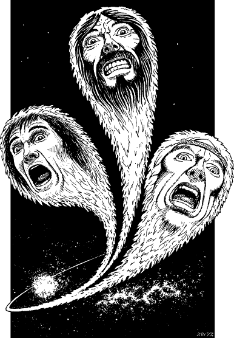

127
You are shocked to the core when suddenly you recognize the faces that have appeared upon the surfaces of the three leading comets. The first is Lord Paido, the Vakeros warrior who accompanied you through the uncharted swamps of the Danarg and later sacrificed his life to protect yours in the infamous Darklord fortress of Torgar. The second is the face of Adamas, the Lord Constable of Garthen, who led the armies of Talestria and Palmyrion in the assault upon Torgar and perished during that fearsome siege. And the third is the bearded face of Sebb Jarel, the brave Eruan partisan who guided you through the Hellswamp and, in so doing, forfeited his life. 10

Your Kai senses detect that the souls of these three brave men are trapped upon this domain. Their spirits were captured by Evil at the moment of their deaths and Naar has since condemned them to an eternity in the service of Avarvae the Tormentress. You see them mouthing words: they are pleading for you to release them from their torment, and your heart is torn by their silent, plaintive cries.
If you possess Deliverance and you have attained the Kai rank of Sun Thane or higher, turn to 163.
If you do not possess this skill, or if you have yet to attain this level of Kai Mastery, turn to 138.
Footnotes
[10] It is possible for Lone Wolf to have visited Torgar without having met Sebb Jarel or accompanied Paido in the Danarg.